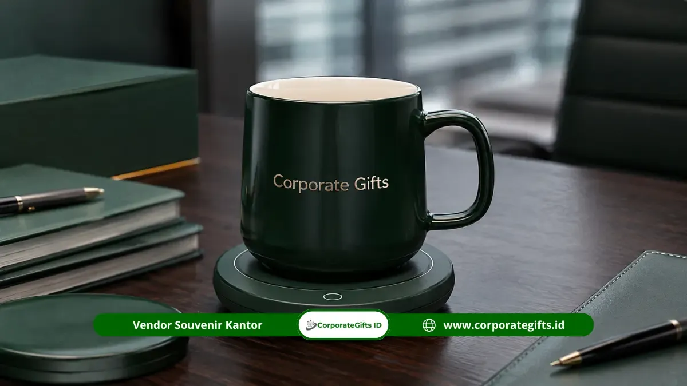

Corporate Gifts ID - Drinkware custom perusahaan adalah souvenir wadah minum bermaterial food grade seperti stainless steel SUS 304, keramik, maupun polimer tritan bebas BPA yang dicetak identitas logo perusahaan. Kategori ini dipilih secara luas sebagai souvenir fungsional kantor karena dipakai hampir setiap hari oleh penerima, sekaligus mendukung inisiatif keberlanjutan dan kampanye ramah lingkungan di lingkungan kerja modern.
Poin Kunci Keunggulan Souvenir Drinkware Kantor:
- Eksposur Brand Harian: Tumbler dan mug diletakkan di atas meja kerja, ruang rapat, hingga kafe luar kantor sehingga menciptakan visibilitas brand konsisten tanpa biaya iklan berulang.
- Daya Tahan Tinggi: Material vacuum flask stainless steel SUS 304 menjaga ketahanan fisik bertahun-tahun serta mampu menahan suhu panas dan dingin 8 hingga 16 jam.
- Kesan Premium & Solutif: Opsi mug keramik dengan USB heating coaster set memberikan sentuhan eksekutif berkelas untuk ruang kerja pimpinan dan klien VIP.
- Fleksibilitas Kustomisasi: Pilihan teknik grafir laser presisi tahan luntur dan UV high-definition print penuh warna untuk merefleksikan identitas visual korporat.
- Kemasan Elegan: Tersedia pilihan packaging hardbox eksklusif dengan foam insert custom untuk pengalaman unboxing berkesan.
Daftar Isi Artikel
Peran Drinkware Custom dalam Strategi Souvenir Fungsional Perusahaan
Dalam kurasi cinderamata korporat modern, drinkware custom memegang peranan krusial dalam menyusun strategi pengadaan merchandise korporat fungsional. Berbeda dari plakat pajangan atau kalender tahunan yang memiliki keterbatasan siklus pakai, wadah minum digunakan berulang kali sejak pagi hari hingga larut malam dalam berbagai situasi aktivitas kerja.
Visibilitas Brand Setiap Hari di Meja Kerja hingga Ruang Publik
Tumbler vacuum insulated dan cangkir kopi portable merupakan salah satu barang personal yang paling sering dibawa oleh para profesional. Mulai dari ditaruh di sisi laptop saat menyusun laporan, dibawa ke ruang rapat direksi, diselipkan di saku samping backpack saat komuter kereta, hingga ditaruh di meja kafe saat bekerja secara remote.
Pola mobilitas harian ini menghasilkan impression rate luar biasa tinggi. Logo perusahaan yang tercetak rapi pada permukaan botol akan disaksikan berulang kali oleh rekan kerja, mitra rapat, hingga masyarakat umum di area publik. Cinderamata ini bertindak layaknya media promosi berjalan yang halus (subtle ambient marketing) tanpa terkesan memaksa.
Sinergi dengan Kampanye Eco-Friendly dan Pengurangan Plastik Sekali Pakai
Banyak instansi pemerintah, BUMN, dan korporasi swasta saat ini mengadopsi indikator ESG (Environmental, Social, and Governance) dengan melarang botol air kemasan plastik sekali pakai di lingkungan kantor. Memberikan souvenir botol minum stainless steel food grade mendukung langsung kebijakan zero single-use plastic tersebut.
Dengan membagikan drinkware ramah lingkungan berkualitas tinggi, perusahaan menegaskan posisinya sebagai organisasi modern yang peduli terhadap kelestarian lingkungan dan gaya hidup sehat karyawan serta para pemangku kepentingan.
Rekomendasi Drinkware dan Tumbler Fungsional Terbaik
Untuk mengakomodasi berbagai skenario acara, mulai dari paket seminar massal hingga apresiasi klien eksekutif, CorporateGifts.ID menyediakan beragam tipe drinkware berstandar kualitas industri:
| Tipe Drinkware | Material Utama | Fitur Utama | Rekomendasi Penggunaan |
|---|---|---|---|
| Vacuum Flask Tumbler | Stainless Steel SUS 304 Double Wall | Tahan panas dingin 12-16 jam, anti-bocor, tutup ulir kedap udara | Onboarding kit karyawan, cinderamata klien VIP, event kantor |
| Mug Keramik Smart Heating | Keramik Porcelain + Coaster Elektrik | Pemanas otomatis 55 derajat Celsius via port USB, sendok stainless | Hadiah direksi, hampers akhir tahun, apresiasi mitra bisnis |
| Sport Bottle BPA-Free | Tritan / Food Grade Polypropylene | Bobot sangat ringan, tahan banting, gantungan lanyard elastis | Fun run gathering kantor, seminar mahasiswa, event CSR outdoor |
| Coffee Tumbler Flip Lid | SUS 304 + Silikon Seal Food Grade | Tutup flip praktis untuk minum kopi panas saat berkendara | Souvenir workshop eksekutif, gift set kafe korporat |
Kustomisasi Drinkware Tahan Lama di Corporate Gifts
Ketahanan visual logo sangat dipengaruhi oleh teknik branding yang diaplikasikan pada permukaan drinkware. Memilih teknik yang tepat menjamin identitas brand tetap utuh meskipun dicuci ratusan kali dan terkena gesekan tas kerja.

Presisi grafir laser dan UV print pada tumbler stainless food grade untuk visibilitas brand jangka panjang.
Perbandingan Metode Grafir Laser Metal vs UV High-Definition Print
Dua metode utama yang paling banyak direkomendasikan untuk kustomisasi drinkware kantor adalah:
- Grafir Laser (Laser Engraving): Proses penembakan sinar laser presisi tinggi pada bodi logam atau permukaan coating stainless steel. Metode ini mengikis lapisan cat secara mikro untuk memunculkan warna dasar logam di bawahnya. Keunggulannya adalah ketahanan permanen, bebas kelupas, tahan goresan, dan memberikan estetika monokromatis yang mewah.
- UV High-Definition Print: Proses pencetakan tinta polymer berbasis sinar ultraviolet yang mengering seketika. Sangat ideal untuk logo korporat yang memiliki panduan warna korporat ketat (standar Pantone), ilustrasi penuh warna, gradasi, maupun tipografi kompleks.
Untuk kemasan, CorporateGifts.ID menyediakan opsi kotak kardus duplex ramah lingkungan bertali rami, tabung silinder hardboard elegan, hingga rigid hardbox beludru dengan penutup magnetik untuk set kado eksekutif.
Layanan Pengadaan Drinkware Custom di Corporate Gifts
Sebagai partner pengadaan merchandise korporat terpercaya di seluruh Indonesia, kami memastikan setiap tahap pesanan drinkware kantor berjalan tepat waktu dan sesuai spesifikasi mutu yang disepakati:
- Konsultasi Kebutuhan & Budget: Tim spesialis kami merekomendasikan pilihan model tumbler atau mug yang paling efisien terhadap alokasi anggaran Anda.
- Digital Mockup Preview Gratis: Kami membuatkan simulasi visual penempatan logo pada drinkware sebelum masuk ke lini produksi massal.
- Produksi Sampel Fisik (Proofing): Untuk pemesanan dalam kuantiti besar, tersedia layanan pembuatan sampel fisik untuk verifikasi kualitas material dan kerapian cetak.
- Quality Control Ketat & Garansi: Setiap unit diperiksa fungsi insulasi termal, kerapatan tutup, dan ketuntasan cetak sebelum dipacking rapi untuk pengiriman aman ke seluruh wilayah Indonesia.
Pertanyaan Seputar Souvenir Drinkware Kantor (FAQ)
Kesimpulan Praktis
Souvenir drinkware custom perusahaan merupakan salah satu investasi merchandise promosi paling efisien dengan rasio eksposur brand yang luar biasa tinggi. Kegunaannya yang nyata dalam kehidupan sehari-hari menjadikannya hadiah yang senantiasa diapresiasi oleh rekan kerja, mitra bisnis, maupun klien institusi.
Mulai dari tumbler vacuum insulated stainless steel SUS 304, mug keramik pemanas USB, hingga sport bottle tritan, pilihan model yang variatif memudahkan penyesuaian dengan tone acara korporat Anda. Percayakan kebutuhan pengadaan souvenir drinkware custom Anda kepada Corporate Gifts ID untuk mendapatkan material food grade terjamin, presisi cetak logo optimal, dan kemasan hadiah berkelas.